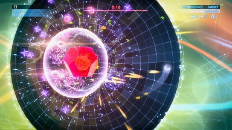

Geometry Wars 3: Dimensions Review
Dimensions recaptures enough of Geometry Wars' thrills to stand as the best new dual-joystick shooter in quite a while.

It must have been difficult to come up with a sequel to one of the most perfect games ever made, but they did it. It was called Geometry Wars: Retro Evolved 2. Where that game featured five or six times as much content as its laser-focused dual-joystick predecessor, Geometry Wars 3: Dimensions similarly beefs up the offering over Retro Evolved 2, and yet over six years later sells at the same price. I don't love every new thing about Dimensions--some of it feels like it's missing the point of what made the original so great--but there are a lot of interesting ideas in here, and holy cow is it nice just to play a new Geometry Wars game again.
Dimensions is entirely built on and expands the concepts in Retro Evolved 2. That means having to pick up geoms from dead enemies to increase your multiplier. It means gimmick modes like pacifism and king are featured prominently. It means more of those damnable orange triangle things that sweep the board back and forth in a straight line. All the modes from 2 (except sequence) are bundled here in the classic menu, each with an attached leaderboard, so when all else is said and done, you've still got a way to compete for more high scores in the same familiar game types on the new consoles.
0 comments
Be the first to leave a comment!